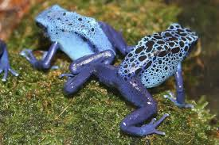

WHY IS THE AMAZON RAINFOREST IMPORTANT
South Americas Amazon contains nearly a third of all the tropical rainforests left on Earth. Despite covering only around 1% of the planet’s surface, the Amazon rainforest is home to 10% of all the wildlife species we know about – and probably a lot that we don’t know yet.
History
In the Amazonas, there has been fighting and wars between the neighboring tribes of the Jivaro. Several tribes of the Jivaroan group, including the Shuar, practised headhunting for trophies and headshrinking.[8] The accounts of missionaries to the area in the borderlands between Brazil and Venezuela have recounted constant infighting in the Yanomami tribes. More than a third of the Yanomamo males, on average, died from warfare.[9]
The Munduruku were a warlike tribe that expanded along the Tapajós river and its tributaries and were feared by neighboring tribes. In the early 19th century, the Munduruku were pacified and subjugated by the Brazilians.[10]
During the Amazon rubber boom it is estimated that diseases brought by immigrants, such as typhus and malaria, killed 40,000 native Amazonians.[11]
ABOUT THE AMAZON
This vast untamed wilderness is under increasing threat from huge-scale farming and ranching, infrastructure and urban development, unsustainable logging, mining and climate change.
Just two quick facts to give you an idea of what’s at stake here:-
- The Amazon has more species of primate than anywhere else on Earth.
- You can find more types of ant on one tree in the Amazon than you can in some whole countries.

Natural
The rainforest likely formed during the Eocene era (from 56 million years to 33.9 million years ago). It appeared following a global reduction of tropical temperatures when the Atlantic Ocean had widened sufficiently to provide a warm, moist climate to the Amazon basin. The rainforest has been in existence for at least 55 million years, and most of the region remained free of savanna-type biomes at least until the current ice age when the climate was drier and savanna more widespread.[16][17]
Sahara Desert dust windblown to the Amazon:-
More than 56% of the dust fertilizing the Amazon rainforest comes from the Bodélé depression in Northern Chad in the Sahara desert. The dust contains phosphorus, important for plant growth. The yearly Sahara dust replaces the equivalent amount of phosphorus washed away yearly in Amazon soil from rains and floods.[25]